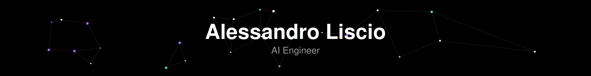

Alessandro Liscio
AI Engineer · Modena, Emilia-Romagna, Italy
About
Hi, I'm Alessandro, an AI Engineer from a small village in Italy, building agentic AI tooling, RAG systems and the infrastructure behind them. I also play D&D, often behind the DM screen, which turned out to be great training for explaining complicated things on stage at conferences. When I'm off the clock I read, play guitar and go trekking.
Featured projects
Marklet
Lightweight, open-source Markdown viewer: outline, live reload, vault search, wiki-links, Mermaid, KaTeX, PDF export. Fully offline.
motion-deck
Claude Code plugin that builds animated one-file HTML presentations in six themes.
Publications and talks
Talks
- LOINC Conference, Cologne: speaker, round table on AI for laboratory test mapping (2026)
- Cloud-Native Days Italy, Bologna: speaker, "L'anatomia di un chatbot enterprise" (2026)
- AIME 2025, Pavia (2025)
- LOINC Conference, Atlanta (2023)
Papers
- Advancing LOINC Mapping with AI: Insights from LARA's RAG Implementation and Expert Evaluation, book chapter (2025)
- An innovative artificial intelligence-based method to compress complex models into explainable, model-agnostic and reduced decision support systems with application to healthcare (NEAR), Artificial Intelligence in Medicine (2024)
- Federated learning in healthcare: Addressing AI challenges and operational realities under the GDPR, Journal of Data Protection & Privacy, vol. 7, no. 3
- BinarySDG: binary sensor data generation with R, arXiv (2019)
Awards and certificates
- Como Lake Awards prize
Experience
AI Engineer · Dedalus (Jul 2022 - Present)
Builds agentic AI tooling and RAG systems, and the infrastructure around them.
Machine Learning Engineer · AAK TELE-SCIENCE, INC. (Apr 2021 - Mar 2022)
Developed Deep Learning and NLP models to match investors and researchers based on investment history and scientific publications.
Education
Alma Mater Studiorum – Università di Bologna Master of Science - MS, Artificial Intelligence (110/110). Thesis: A Transformer-Based Application for Researchers Recommendation (Sep 2019 - Mar 2022)
University of Camerino Bachelor's degree, Information Technology (109/110). Thesis: Monitoring of Behavioral Anomalies on Patients in Rehabilitation from Spinal Trauma (Sep 2016 - Oct 2019)
Skills
PythonLangChainRAGLLM and agentic AIAzure AIHugging FacePyTorchScikit-LearnPandasNumPySQLPostgreSQLDockerLinuxGitOpenShiftHelmGitHub Actions
Languages
Italian (native)English (professional)